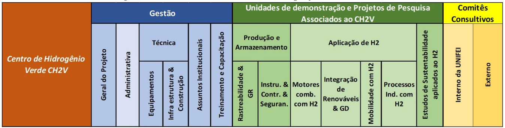
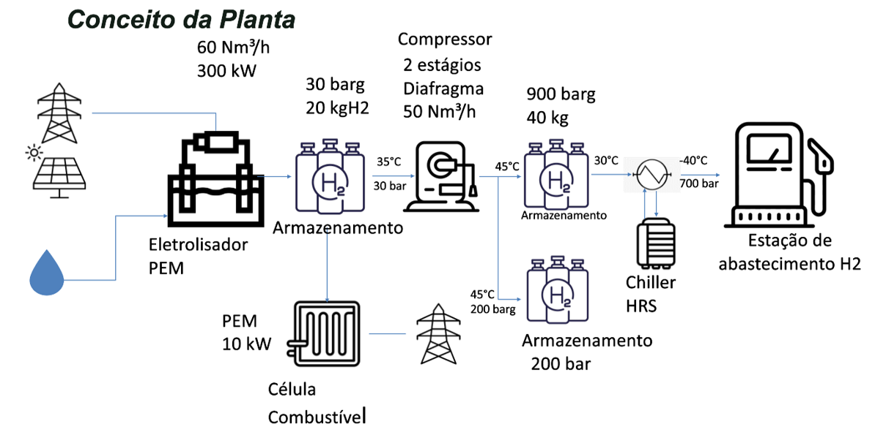
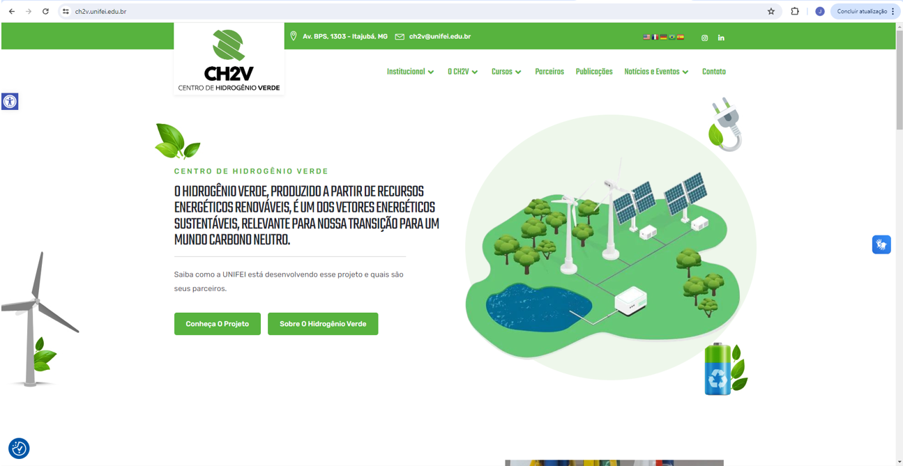

CAPÍTULO 2 UMA VISÃO GERAL DO PROJETO APRESENTADO PARA A ALEMANHA E ALGUNS RESULTADOS
Após algumas reuniões com a equipe técnica da GIZ, a UNIFEI encaminhou uma proposta de projeto em fevereiro de 2022, contendo 42 páginas com o seguinte conteúdo: 1. Apresentação, 2. Justificativa, 3. Objetivos, 4. Estratégias para disseminação do conhecimento, 5. Estratégias para inclusão de iniciativa privada, 6. Sinergia e integração com outras atividades, 9. Cronograma de atividades, 10. Equipe e matriz de responsabilidades, 11. Resultados esperados, 12. Planilha orçamentária, 13. Análise de riscos e 14. Considerações finais.
O valor total destinado pela GIZ para esse projeto, denominado Centro de Hidrogênio Verde (CH2V), foi de 5 milhões de euros envolvendo a instalação de uma planta de produção de hidrogênio juntamente com um sistema de abastecimento veicular, construção de uma edificação (projetos, obras, estrutura interna, etc.) para abrigar pessoal técnico e laboratórios destinados a atividades com hidrogênio, banco de ensaios em motores com H2, desenvolvimento de um curso EAD, desenvolvimento de website, bolsas para alunos e pesquisadores, viagens nacionais e internacionais, desenvolvimento de estudos técnicos, estabelecimento de parcerias, workshops, entre outras ações. Inicialmente, o projeto estava previsto para ser desenvolvido entre março/2022 a dezembro/2023. A Figura 2.1 ilustra as principais questões relacionadas ao projeto enquanto a Figura 2.2 apresenta uma visão geral dos principais componentes da planta de produção de hidrogênio.

Figura 2.1: Atividades relacionadas ao projeto CH2V

Figura 2.2: Visão geral dos componentes da planta de produção de hidrogênio
2.1 Alguns Resultados
Entre os principais resultados obtidos com o projeto CH2V, pode-se citar:
Instalação, no campus da UNIFEI, de uma planta de eletrólise com potência de 300 kW, tanques de armazenamento, compressores e um sistema de abastecimento para veículos movidos a hidrogênio (Postos de Abastecimento de Hidrogênio - HRS).
Construção de um edifício com área aproximada de 800 m² para o desenvolvimento de atividades e projetos de pesquisa relacionados ao uso de hidrogênio verde.
Aquisição e instalação de uma bancada de testes de motores em contêiner, com os instrumentos necessários para testar motores de até 600 HP e 2500 Nm de torque.
Criação, desenvolvimento e publicação de conteúdo para a modalidade de ensino a distância (EAD) de um curso de treinamento/qualificação em hidrogênio verde.
Realização de dois workshops para a comunidade acadêmica da UNIFEI.
Desenvolvimento e implementação de um portal web (website CH2V) para divulgação das atividades do CH2V.
Além dos resultados mencionados anteriormente, com a orientação de professores pesquisadores e de alunos bolsistas envolvidos no projeto, foram elaborados nove estudos técnico-econômicos envolvendo a produção e utilização de hidrogênio verde em diferentes aplicações: “Desafios no Armazenamento de Hidrogênio” (Geovani Rodrigues, Luis Fernando Corrêa de Almeida); “Conversores Formadores de Rede Alimentados por Células de Combustível” (João Vítor Ambrosio Milani, Kethellyn Wendy Rivoli Gomes, Robson Bauwelz Gonzatti, Rondineli Rodrigues Pereira); “Como garantir a produção de hidrogênio verde em CH2V através do selo I-REC” (Igor Campos Junqueira, Samuel Lucas dos Santos Junior, Rafael Silva Capaz); “Como garantir a produção de Hidrogênio verde através do certificado CCEE (Brasil)” (Igor Campos Junqueira, Samuel Lucas dos Santos Junior, Rafael Silva Capaz); “Produção de hidrogênio a partir da gaseificação de biomassa: perspectivas e limitações” (Borges, T.P, Lora, E.E.S, Venturini. O., Errera, M. R, Isa, Y.M, K, A. e Zhang, S.); “Estudo de normas de segurança em instalações com produção e uso de hidrogênio” (Márcia Regina Baldissera Rodrigues, Lucia del RosarioGarrido Rios, Acsa Martins, Anne Karoline Tirelli); “Uso de hidrogênio em motores de combustão interna” (G. M. Pinto, T. A. Z. de Souza, R. B. R. da Costa, L. F. A. Roque, G. V. Frez, L. P. Vidigal, N. V. Perez, C. J. R. Coronado); “Qualidade da água necessária para a produção de hidrogênio verde a partir da eletrólise da água” (Regina Mambeli Barros, Lucia Garrido Rios, Marcia Regina Baldissera Rodrigues); “Modelagem numérica de CFD em aplicações de hidrogênio” (Caio Probst de Sá, Fagner Goulart Dias). A Figura 2.3 apresenta a página inicial do site desenvolvido (https://ch2v.unifei.edu.br/).

Figura 2.3: Site do CH2V
O curso na modalidade de ensino a distância (EAD) sobre hidrogênio verde foi desenvolvido pelos professores participantes do projeto CH2V. Para cada disciplina (ou módulo) foi elaborado um texto que serviu de referência ou material a ser consultado pelos futuros alunos, além de compor um livro digital para ser consultado. Em paralelo ao trabalho de desenvolvimento desse material, foi realizada uma licitação e contratada uma empresa especializada em projetos audiovisuais para produção de treinamentos para oferta de cursos na modalidade EAD a serem disponibilizados dentro do portal de comunicação do Centro.
A empresa contratada realizou a adaptação das disciplinas para o formato de roteiro de videoaulas, empregando também conteúdos complementares, como livros eletrônicos, peças visuais, inserções e peças de comunicação. Os módulos desse curso estão relacionados no Tabela 2.1.
| Módulos | Disciplinas |
|---|---|
| Módulo 1 - Introdução | • Histórico e Perspectivas • Conceitos Básicos • Armazenamento Químico de Energia • O Projeto CH2V |
| Módulo 2 - Contextualização | • Transição Energética • Experiência Internacional • Exemplos de Projetos |
| Módulo 3 - Aspectos Técnicos na Produção e Logística | • Tecnologias • Logística do Hidrogênio |
| Módulo 4 - Aplicações do Hidrogênio | • Aplicação de H₂ na Geração de Energia Elétrica • Aplicação de H₂ em Mobilidade • Uso do Hidrogênio na Indústria • Células a Combustível |
| Módulo 5 - Aspectos Econômicos | • Princípios de Matemática Financeira • Custos de Capital em Projetos de Hidrogênio • Custos de Operação e Manutenção em Projetos de Hidrogênio |
| Módulo 6 - Aspectos Ambientais | • Análise do Ciclo de Vida: Conceitos e Aplicações • Pegada de Carbono da Produção de Hidrogênio • Certificação do Hidrogênio Verde |
| Módulo 7 - Aspectos Regulatórios e Normativos | • Segurança • Regulação da Produção de Hidrogênio • Regulação do Uso de Hidrogênio • Mecanismos de Incentivo ao Hidrogênio |